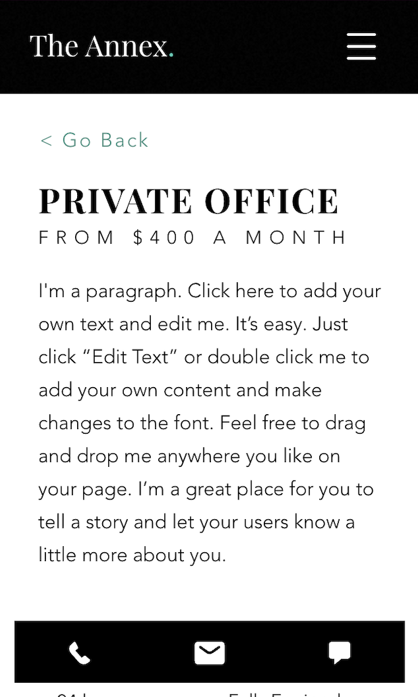
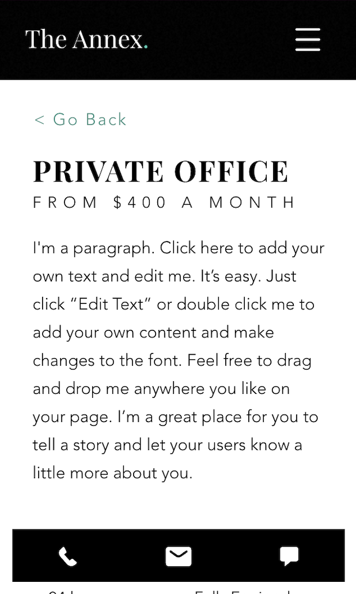
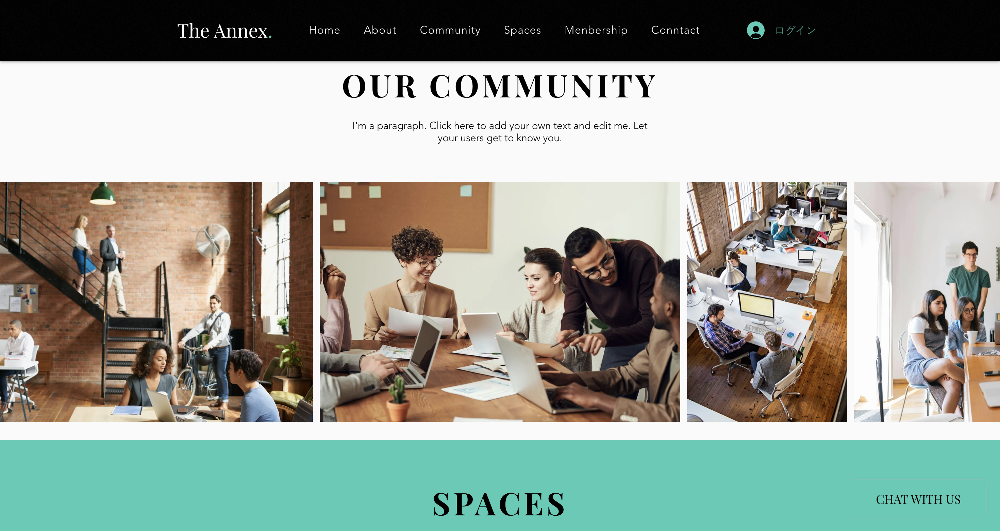
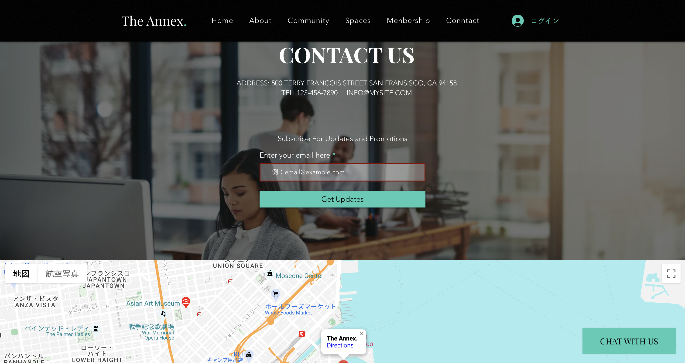
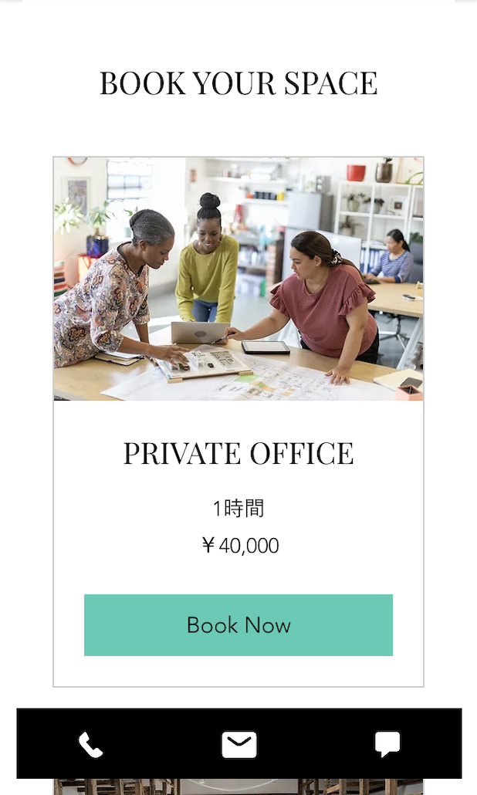

The Annex.(架空)
https://jokubo413.wixsite.com/my-site-6
 




使用ツール：Wix
制作期間：1週間
コワーキングスペースを提供する会社のサイトを制作しました。
いきいきとしたワーキングスペースの雰囲気が伝わるように、文字のアニメーションを追加し、マウスオーバー時などの画像の見せ方にこだわりました。
問い合わせフォームでは、入力が分かりやすいようにホバー時の挙動やエラー表示などを実装しました。